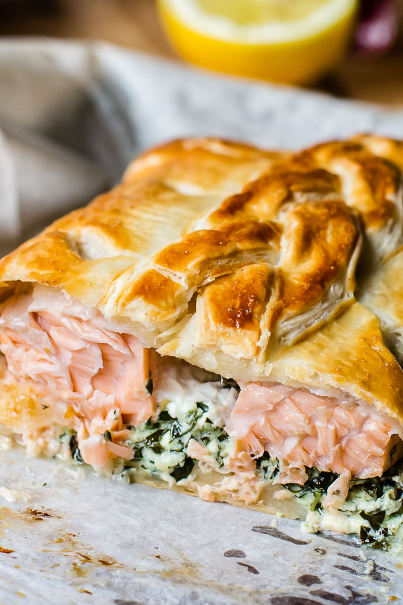

Salmon en croûte 🍣

Salmon en croûte is a deliciously tender salmon fillet wrapped in golden puff pastry with a spinach and mushroom filling.
I like to serve it with a lemon-mustard sauce and a side of asparagus for an impressive French-inspired meal.
Prep Time: 15 mins
Cook Time: 1 hr
Total Time: 1 hr 15 mins
Servings: 4
Ingredients
Salmon en croûte:
- 2 tablespoons olive oil, divided
- ½ onion, chopped
- 1 cup chopped fresh mushrooms
- 2 teaspoons minced garlic, divided
- salt and ground black pepper to taste
- 1 cup baby spinach
- 1 tablespoon all-purpose flour, or as needed
- 2 sheets frozen puff pastry, thawed
- 1 (1 ½-pound) boned, skinned salmon fillet
- ½ teaspoon smoked paprika, or more to taste
- 1 egg, beaten
Sauce:
- ½ cup mayonnaise
- 2 tablespoons fresh lemon juice
- 2 teaspoons Dijon mustard
- ½ teaspoon dried dill
Steps
- Gather all ingredients.
- Heat 1 tablespoon oil in a large skillet over medium heat. Add onion; cook and stir until translucent, about 5 minutes. Add mushrooms and 1 teaspoon garlic; cook and stir until mushrooms are soft, about 5 minutes. Season with salt and black pepper. Transfer onion and mushroom mixture to a small bowl.
- Heat remaining 1 tablespoon oil in the same skillet. Add remaining 1 teaspoon garlic; cook and stir until fragrant, about 30 seconds. Add spinach; cook and stir until wilted, 3 to 5 minutes. Season with salt and black pepper. Transfer to another bowl.
- Preheat oven to 350 degrees F (175 degrees C). Line a glass baking dish with parchment paper.
- Dust work surface with flour. Lay 1 puff pastry sheet out on work surface; spread onion and mushroom mixture evenly across pastry, leaving a 1/2-inch border. Center salmon on top; sprinkle paprika over salmon and top with wilted spinach.
- Cover with second puff pastry sheet. Fold over and crimp edges to seal. Brush top with beaten egg. Transfer to prepared baking dish.
- Bake in the preheated oven until pastry is golden, 40 to 45 minutes. Let cool briefly, then slice into 4 portions.
- To make the sauce: Whisk mayonnaise, lemon juice, Dijon mustard, and dill together in a small bowl.
- Spoon sauce onto 4 plates and place a piece of salmon en croûte on each.
Cook's Note
You can substitute spinach with asparagus spears, and use 1 heaping teaspoon fresh dill instead of dried if preferred.
Use espelette pepper instead of the smoked paprika if you can find it.
If using a convection oven, bake for 30 to 35 minutes.
Nutrition Facts
Per serving: 1206 total fat 86g saturated fat 18g cholesterol 132mg sodium 653mg total carbohydrate 61g dietary fiber 3g total sugars 2g protein 48g vitamin c 9mg calcium 98mg iron 5mg potassium 835mg
Home